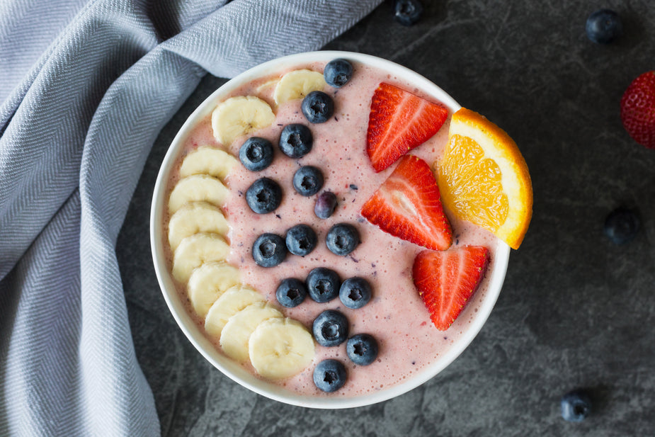

Banana Smoothie
Home

A delicious banana smoothie
This banana smoothie recipe is a great way to start your day. It is full of nutrients your body loves like
vitamin K and fiber. It is also very customizable so you can make it to your preference. My favorite add ons are
peanut butter for additional protein and chocolate for some added flavor. This recipe makes one smoothie,
however it can easily be doubled if needed. It is also vegan so it is a great recipe for all your dietary
preferences.
Ingredients
- 1 Banana chopped
- 1 cup of preferred milk or milk substitite
- 1/2 cup oats
- 1/2 tsp cinnamon
- 1/4 tsp vanilla extract
- 1 tbsp peanut butter(optional)
- 1 tbsp cocoa powder(optional)
Instructions
- pour the oats into your blender
- pour the milk over the oats making sure that the oats are evenly coated
- let the oats soak for 30min in order to let them soften so that they are easier to blend and digest
- add in the chopped bananas and blend at a high speed. Make sure everything is well blended together
- for a thinner consistency, add more milk and blend(optional)
- add in the cinnamon, vanilla extract, and the optional peanut butter and cocoa powder. blend at a low speed
- transfer the smoothie over to a glass and enjoy